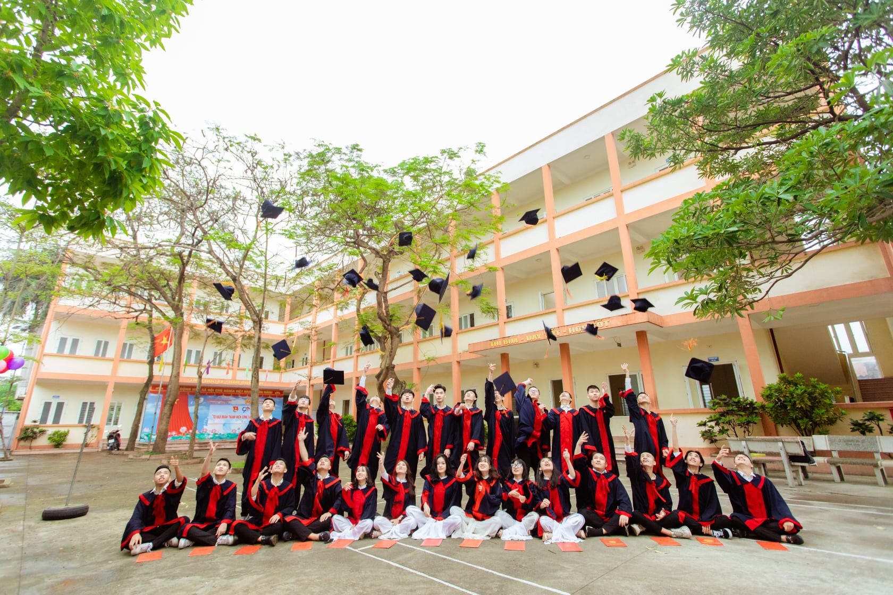

Giá trị Cốt lõi
Ngoài việc truyền đạt kiến thức, người làm giáo dục cần lan tỏa “cái tâm” để học sinh có thể noi theo trong chặng đường hoàn thiện nhân cách của mình. Trường THPT Ngô Quyền – Đông Anh là ngôi trường tư thục hiện đại, chất lượng cao, hội nhập quốc tế rèn luyện học sinh cả về kiến thức và nhân cách. Các thầy cô giáo đang làm việc dưới mái trường THPT Ngô Quyền – Đông Anh luôn đặt “cái tâm” lên hàng đầu để việc giảng dạy thực sự hiệu quả, đúng với tôn chỉ của ngành giáo dục. “Sự nghiệp trồng người” luôn được đề cao, nghề giáo viên vẫn luôn là nghề được quý trọng nhất. Nhà trường hướng tới giáo dục các thế hệ học sinh trung thực, nhiệt huyết, tài năng và trách nhiệm. Nơi các em được học tập, tìm tòi, khám phá về con người, văn hóa, kinh tế, xã hội…hư ớng tới trở thành công dân toàn cầu. Bên cạnh sự giáo dục từ gia đình thì trường học là nơi giúp các em có nền tảng tri thức vững chắc và trở thành một người có nhân cách cao đẹp. Nhà trường luôn không ngừng đổi mới chất lượng dạy và học theo định hướng phát triển năng lực, giáo dục HS bằng tình yêu thương, lòng vị tha và cái “tâm” của một nhà giáo chân chính.
Vì vậy chúng tôi nuôi dưỡng ý tưởng xây dựng ngôi trường với sự trọn vẹn yêu thương và lòng vị tha, nơi vun bồi giá trị TÂM – TUỆ – NGHỊ, nâng đỡ và dìu dắt các em trưởng thành về nhân cách, vững vàng trong cuộc sống.
– TÂM: là giá trị mà các thế hệ giáo viên và học sinh nhà trường luôn vun đắp bằng tình yêu thương, biết sống vị tha hơn vị kỉ.
– TUỆ: là ánh lửa của tư duy, nhận thức, soi sáng cuộc sống giúp các em hiểu mình, hiểu người, phân biệt được đúng sai. Đây là giá trị quan trong để thế hệ HS dưới mái trường THPT Ngô Quyền – Đông Anh trở thành những người tài giỏi trong tương lai.
– NGHỊ: là tính kỉ luật, dũng cảm, quyết liệt trong hành động, sự kiên trì, bền bỉ không chịu lùi bước trước khó khăn, thử thách để thực hiện cho kì được mục tiêu, chí hướng đã vạch ra.
Đây là ba giá trị quan trọng, là thước đo phẩm giá, nhân cách của con người giúp các em tự tin hơn vào bản thân, là tiền đề của mọi thành công. Vì vậy các em hãy luôn không ngừng cố gắng, rèn luyện, trau dồi cả ba giá trị: TÂM –TUỆ – NGHỊ để trở thành những công dân toàn cầu thế hệ mới.